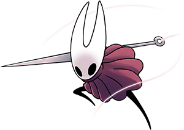

Assim como os metroidvania anteriores, Hollow Knight tem sua jogabilidade de inicio simples. Você anda, pula, ataca. Exprimente abaixo!

O mundo de Hollow Knight é habitado por insetos antropomórficos que viviam em uma cidade subterrânea, até que um tipo de contaminação enlouqueceu as criaturas. O Hollow Knight, personagem principal que carrega o nome do jogo ("cavaleiro vazio" em inglês), é um tipo de receptáculo criado para combater essa infecção. No entanto, após tantos anos e ciclos, não sobrou muito o que salvar. O mundo já está em ruínas e o jogador apenas encontra registros dessa civilização que supostamente deveria proteger. Em meio a tudo isso, o cavaleiro encontra também Hornet, a protetora dessas ruínas que às vezes tenta impedi-lo.
O enredo de Hollow Knight é tão profundo quanto seu mapa e, caso jogadores se interessem, é possível ir atrás de cada figura que era importante nesse mundo e descobrir o que aconteceu depois desses anos, como o "Rei Pálido" e a "Dama Branca". Boa parte da história é contada de forma sutil ou indireta com cenas e diálogos que insinuam ligações entre personagens para que o usuário ligue os pontos, ou melhor, teça os fios.